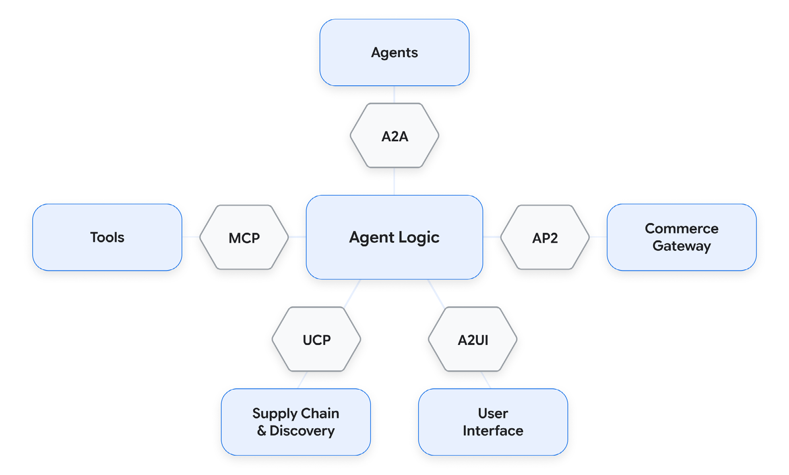
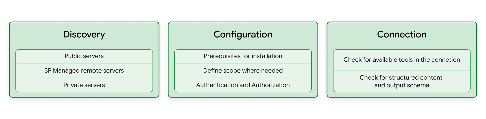
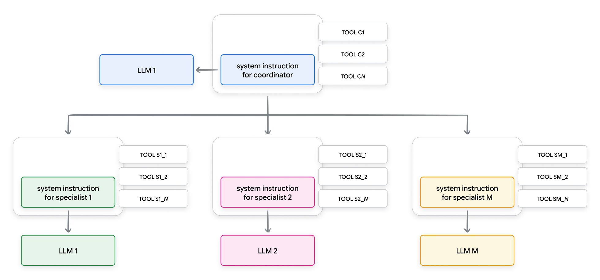
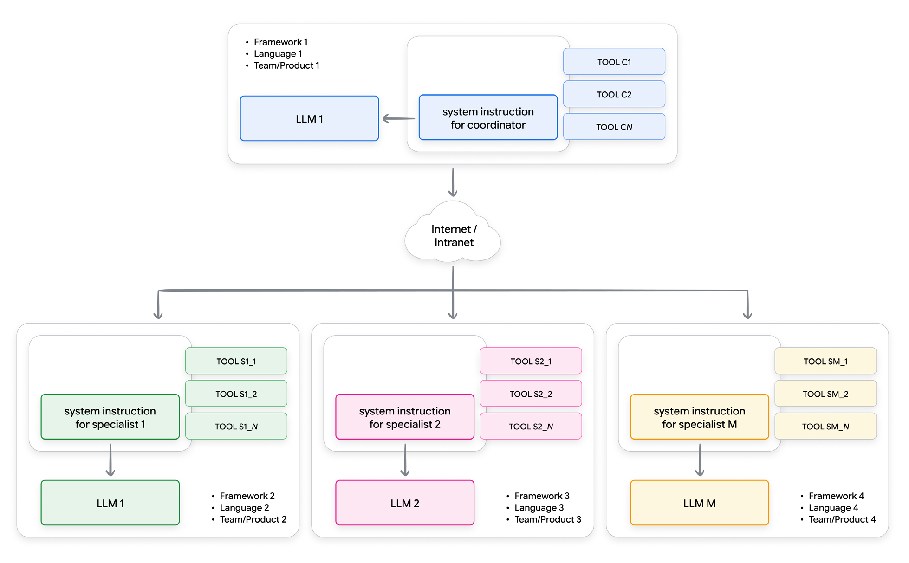
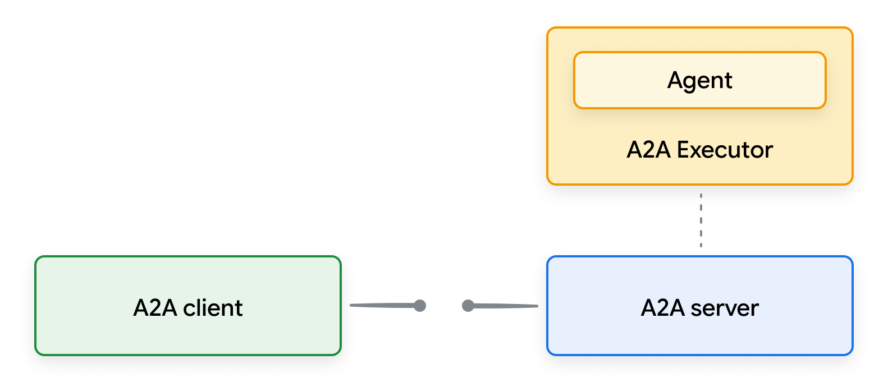
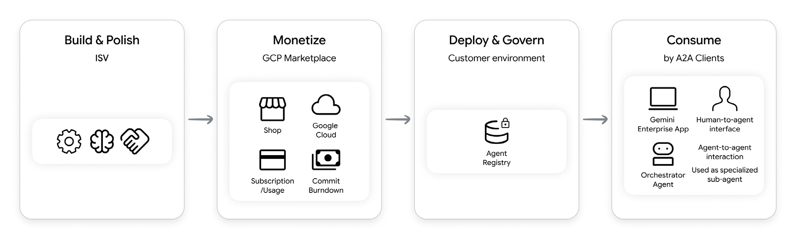
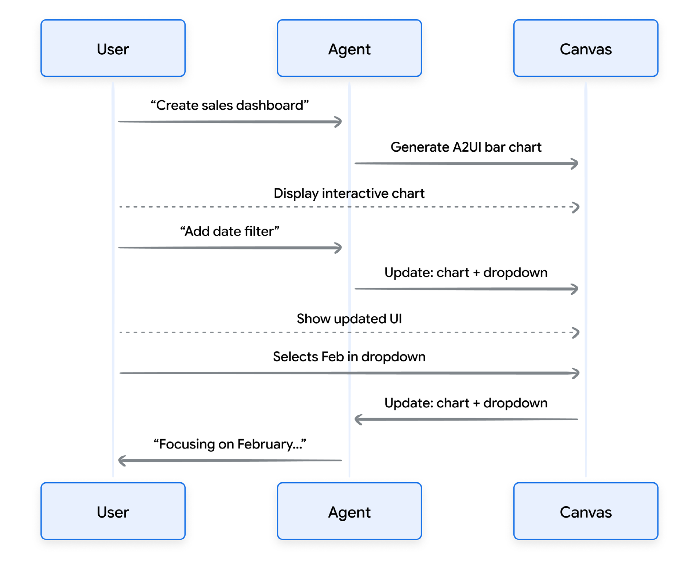
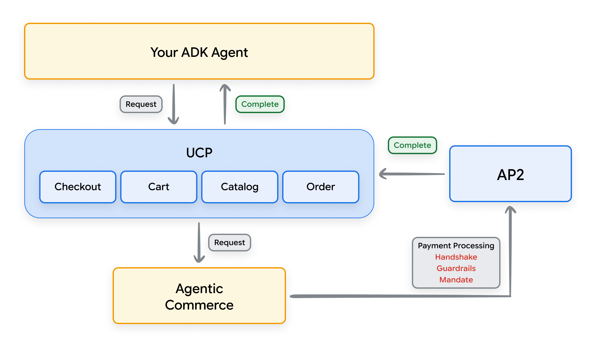

فهرست مطالب
تکامل بعدی نرمافزار نوشته نمیشود؛ عاملهای تعاملپذیر آن را هماهنگ میکنند.
۱.مقدمه
در جلسهٔ اول، جابهجایی پارادایم از توسعهٔ سنتی نرمافزار به مهندسی عاملمحور (Agentic engineering) را ترسیم کردیم و مدل کارخانه (Factory model) را معرفی کردیم، جایی که خروجی اصلی شما بهعنوان توسعهدهنده دیگر نحو خام نیست، بلکه سامانهای است که کد تولید میکند.
اگر مهندسی عاملمحور همان کف کارخانهای باشد که هماهنگش میکنید، پس پروتکلهای باز استانداردهای صنعتی آناند — پیچ و مهرههای یکدست، قالبهای داده، و کانالهای ارتباطی که اجازه میدهند ماشینآلات شما ایمن با باقی جهان تعامل کند.
بدون این پروتکلهای باز، هر عاملی که میسازید مانند یک «ماشین سفارشی» منزوی در گاراژ وجود دارد. ناچارید ساعتها و توکنهایتان را صرف نوشتن پوششهای شکنندهٔ سفارشی برای تکتک اتصالهای ابزار (tool) و رابط کنید، و همین شما را در نقش کماهرمِ رهبر ارکستر (Conductor) گرفتار میکند. با پذیرش لایههای استاندارد تعاملپذیری، مهار (harness) عامل خود را به سکویی پیمانهای و «بزنوبرو» بدل میکنید.
| لایه | استعاره | کارکرد |
|---|---|---|
| رابطهای پاسخ باز و تعامل | پریز برق | رویکردهای مدرن به استنتاج مدلهای زبانی که از کارهای طولانی پشتیبانی میکنند و مرز (boundary) میان یک نوبت (turn) بیحالت و یک عامل باحالت را محو میکنند. |
| پروتکل زمینهٔ مدل (MCP) | USB-C | مدلها را فوری به پایگاههای داده، فایلسیستمها و رابطهای وب وصل میکند. |
| مهارتها (skill) | دفترچهٔ راهنما | دستورهای بسیار سادهٔ مارکداون بههمراه اسکریپت یا ابزار که در محیطی سندباکسی مثل ترمینال به کار میروند. |
| عاملبهعامل (A2A) | بیسیم کارخانه | به عاملهای تخصصی اجازه میدهد مذاکره کنند، همفکری کنند و کار را به هم واگذار کنند. |
| عامل به رابط کاربری | ویترین مولد | خروجیهای خام و پیچیدهٔ JSON را به اجزای بصری ایمن و تعاملی برای اپراتورهای انسانی بدل میکند. |
| پروتکلهای تجارت | شبکهٔ زنجیرهٔ تأمین | به عاملها اجازه میدهد تراکنشهای تجاری خودگردان (autonomous) را ایمن مذاکره و اجرا کنند. |

چرا این مقاله، چرا حالا
در عصر کدنویسی شهودی (Vibe coding) با ساختار کمتر، مهارها و پروتکلها به ساخت اعتماد در فرایند توسعهٔ عامل کمک میکنند. در حالی که سرعت رسیدن به نتیجه محرک (trigger) اصلی شاغلان و توسعهدهندگان میماند، پروتکلهای استاندارد اجازه میدهند در دستیابی به هدفهای پیچیده بسیار فراتر برویم، با تبدیل «ماشینهای سفارشی» منزوی به سکوهای پیمانهای و تعاملپذیر.
بدون استانداردهای باز مورد توافق، توسعهدهندگان بدهی فنی میسازند؛ هر رابط یک استاندارد-تک است. اینها کارهای کماهرماند: نوشتن پوششهای شکنندهٔ سفارشی برای هر ابزار، نگهداریشان در طول زمان، و سازگار شدن با نیازهای دیگران. پذیرش این لایهها اجازه میدهد از یک سازندهٔ ساده به هماهنگکنندهای در سطح بالا تغییر کنید.
این مقاله برای چه کسانی است
این مقاله ویژهٔ مهندسان نرمافزار، مدیران مهندسی، معماران و رهبران فنی طراحی شده است که تشخیص میدهند گذار بهسوی مهندسی عاملمحور نیازمند پایبندی سختگیرانه به پروتکلهاست تا وفاداری و اتکاپذیری نتایج حفظ شود. این مقاله راهنمایی عملی برای «کدنویسان شهودی» است که سرعت و نتایج بصری را در اولویت میگذارند و نشان میدهد چگونه یک تیم مجازی داده و اجرا بسازند.
فقط حداقل مطلق کدِ لازم برای حل مسئلهٔ بیواسطه را بنویسید و از قابلیتهای گمانهای، انتزاعهای درخواستنشده و پیکربندیهای پیشبینانه سختگیرانه بپرهیزید. هنگام ویرایش کد موجود، تغییرها را کاملاً جراحی کنید: فقط خطوط دقیقاً لازم را بهروز کنید، سبک موجود را بینقص حفظ کنید، و کد مجاور و سالم را کاملاً دستنخورده بگذارید.
در نهایت، هر کار را با اجرای هدفمحور پیش ببرید: آن را به برنامهای گامبهگام با معیارهای موفقیت قوی بشکنید، مثلاً ابتدا تستی بازتولیدکننده یا شکستخورده بنویسید و مستقل در حلقهٔ راستیآزمایی بچرخید تا آن هدف مشخص سختگیرانه برآورده شود.
۲.نگاه کدنویس شهودی به پروتکل زمینهٔ مدل
راه سنتی سازمانی برای رساندن ابزار به یک مدل زبانی، سیمکشی سخت و سفارشی است. هر اتصال تازه پوششهای سفارشی، کلیدهای رابط، سیاستهای (policy) تازهسازی توکن (token) و تجزیهگرهای سفارشی JSON میطلبد. پروتکل زمینهٔ مدل این اصطکاک را با یک سوکت استاندارد جایگزین میکند.

کشف
کدنویسان شهودی رابط سفارشی نمینویسند؛ سرورهای ازپیشساخته را از سه منبع اصلی پیدا میکنند:
- فهرستهای ثبت عمومی: فهرستهای در دسترس عموم صدها سرور ازپیشساخته میزبانی میکنند. اینها برای نمونهسازی سریع محلی عالیاند اما بررسینشدهاند و استفاده از آنها با ریسک خودتان است.
- سرورهای راه دور شخص ثالث: سکوهای بررسیشده نقاط پایانی میزبانیشده عرضه میکنند. سرورهای رسمی منتشرشده به عامل شما اجازه میدهند ایمن با سرویسهای مدیریتشده تعامل کند.
- فهرستهای ثبت داخلی: درون یک سازمان، ابزارهای داخلی بهشکل سرور عرضه و در فهرستی امن کاتالوگ (Catalog) میشوند. پیادهسازی فنی این فهرست معمولاً از راه دروازهٔ رابط یا درگاه ریزسرویس خصوصی مدیریت میشود.
پیکربندی
پیش از اتصال، پارامترهای استانداردی را مشخص کنید که دامنه و مجوزهای سرور را تشریح میکنند. این شامل راهاندازی فایلهای محیطی برای ادارهکردن اعتبارنامههای رابط (مانند توکنهای دسترسی شخصی یا رازهای احراز هویت (identity)) و تعریف مجوزهای خواندن و نوشتن برای محافظت از فایلسیستم شماست.
سیاههٔ وارسی پیش از اتصال: پیشنیازها را بررسی کنید · دامنه و معیارهای دسترسی را مشخص کنید · مشخصات (spec) را در عامل کدنویسی بگنجانید · احراز هویت را تنظیم کنید.
اتصال
پس از پیکربندی، کلاینت اتصال را با سرور برقرار میکند. برای راستیآزمایی اتصال، کلاینت میزبان یک درخواست دستدادن پایه اجرا میکند تا ابزارهای موجود را فهرست کند و اسکیمای خروجی را اعتبارسنجی کند.
دور زدن مسئلهٔ N×M در نمونهسازی
برای درک اینکه چرا این پروتکل برای نمونهسازی سریع حیاتی است، به ریاضیات یکپارچهسازی نگاه کنید. اگر با N مدل زبانی مختلف آزمایش میکنید و میخواهید آنها را به M ابزار بیرونی مختلف وصل کنید، توسعهٔ سنتیِ سرِدستی نوشتن کد یکپارچهسازی سفارشی برای تکتک تقاطعهای مدل-ابزار را میطلبد.
اگر ۵ مدل و ۱۰ ابزار داشته باشید، باید ۵۰ نقطهٔ یکپارچهسازی سفارشی را نگه دارید. اگر رابط یک ابزار عوض شود، بدون پروتکل، چند حلقهٔ تجزیهگر میشکنند.
Traditional Integration: MCP Interoperability:
Models Tools Models MCP Tools
[Model A] ── [Tool 1] [Model A] ──┐ ┌── [Tool 1]
[Model B] ── [Tool 2] [Model B] ──┼─ [MCP] ┼── [Tool 2]
[Model C] ── [Tool 3] [Model C] ──┘ └── [Tool 3]
Effort: O(N x M) Effort: O(N + M)قطعهٔ ۱: پیچیدگی یکپارچهسازی — پروتکل، پیچیدگی را از ضربی به خطی کاهش میدهد.
چرا این مهم است: حاملها
با استانداردسازی تعریف ابزارها، حاملهای (Transport) استاندارد را مستقیم به مهار عامل وصل میکنید، بیآنکه کد یکپارچهسازی بنویسید:
- ورودی/خروجی استاندارد: بیشتر برای تلاشهای محلی و نمونهسازی به کار میرود. عامل کدنویسی شما میتواند بدون راهاندازی اتصال شبکهٔ پیچیده اجرا شود، چون ابزار را فرایندی محلی میداند. کلاینت میزبان سرور را بهعنوان زیرفرایند پسزمینهٔ محلی راه میاندازد و پیامها را از راه ورودی و خروجی استاندارد رد و بدل میکند.
- رویدادهای ارسالی سرور روی HTTP: کلاینت میزبان (محلی یا برنامهای عاملمحور و مستقر) از راه پروتکلهای استاندارد وب به نقطهٔ پایانی راه دور وصل میشود و داده را در زمان واقعی به عامل جریان میدهد. این نسبت به رویکرد نخست مزیتهای زیادی دارد — وابستگی (dependency) کمتر، همیشه بهروز، ردپای کوچکتر و چرخهٔ عمر سادهتر — اما بار بیشتری بر سرور ابری میزبان میگذارد.
دیباگ سرورها
وقتی عامل شما پارامترها را توهم (hallucination) میکند، ابزار اشتباه را صدا میزند، یا در تجزیهٔ بار شکست میخورد، وقت را صرف تغییر کورکورانهٔ دستورهای سامانه نکنید. مستقیم لولههای حامل را دیباگ (debug) کنید:
- بازرس پروتکل: ابزاری بومی برای توسعهدهنده که پنل وبی محلی اجرا میکند. اجازه میدهد هر سرور محلی یا راه دور را دستی پرسوجو کنید، اسکیماهای فعال ابزار را ببینید، ورودیهای بار را دستی بیازمایید، و بستههای خام را بازرسی کنید، بدون آنکه گردشکار (workflow) اصلی عاملتان را راه بیندازید.
- ابزارهای توسعهدهندهٔ مرورگر: هنگام اجرای محیطهای توسعهٔ وبمحور یا دیباگ اتصالهای جریانی عالیاند و اجازه میدهند جریانهای ورودی وب را ردیابی و تأخیر (latency) سرور را بررسی کنید.
جعبهابزار کدنویس شهودی: بایدها و نبایدها
| بایدها | نبایدها |
|---|---|
| سرورهای عمومی را پیش از اتصال ممیزی کنید. همیشه کد سرورهای متنباز در دسترس عموم را پیش از وصلکردنشان به عاملی که به فایلسیستم محلی یا اعتبارنامههای شما دسترسی دارد بازبینی کنید. | اگر میتوانید مصرف کنید، نسازید. در برابر وسوسهٔ نوشتن پوشش سفارشی مقاومت کنید. اول دنبال سرور موجود بگردید تا فلسفهٔ «پریز جهانی» حفظ شود. |
| برای ابزارها از بازیابی (retrieval) استفاده کنید. کانتکست ویندوی عامل را تمیز نگه دارید. ابزارها را پویا (Static) و فقط هنگام نیاز از فهرست بار کنید، و پس از پایان کار از زمینه (context) بیرونشان بیندازید تا از رقیقشدن توجه (Attention dilution) جلوگیری شود. | سرورهای عمومی و راستیآزمایینشده را در تولید به کار نبرید. سرورهای متنباز برای نمونههای آخر هفته فوقالعادهاند، اما ریسک امنیتی و اتکاپذیری دارند. منطق هستهٔ کسبوکار را به نقاط پایانی راستیآزمایینشده گره نزنید. |
| از دروازهها (gate) و فهرستهای داخلی بهره بگیرید. اگر ممکن است به فهرستهای ابزار داخلی تکیه کنید. این تضمین میکند اسکیماهای دادهٔ تأییدشده و حکمرانیشده مصرف میکنید. | اعتبارنامه را سختکد نکنید. در مرحلهٔ پیکربندی، هرگز کلید رابط یا توکن احراز هویت را مستقیم در درخواست عامل یا اسکریپتهای محلی نچسبانید. برای پاسدادن اعتبارنامه به متغیرهای محیطی تکیه کنید. |
| انسان را در حلقه (loop) بگنجانید. ورودیهای ابزار را پیش از فراخوانی سرور به کاربر نشان دهید تا از خروج مخرب یا تصادفی داده جلوگیری شود. | به تولید وصل نشوید. سرور را با پروژهای توسعهای به کار ببرید، نه تولید. مطمئن شوید محیط توسعهتان دادهٔ غیرتولیدی (یا پوشاندهشده) دارد. |
| ممیزی کنید. استفاده از ابزارها را برای مقاصد ممیزی گزارشبرداری کنید. | برای بهروزرسانی به کارش نبرید. اگر ناچارید به دادهٔ واقعی وصل شوید، سرور را در حالت فقطخواندنی بگذارید. و دسترسی گسترده به همهٔ پروژهها ندهید؛ سرور را به پروژهای مشخص دامنهبندی (scoping) کنید. |
۳.تعاملپذیری عاملبهعامل
همانطور که سامانههای هوش مصنوعی به شبکههای توزیعشدهای از متخصصان حوزه گذار میکنند، ارتباط استاندارد برای مقیاسگرفتن ضروری میشود. این بخش پروتکل عاملبهعامل را بهعنوان لایهٔ بنیادینی میکاود که پارهپارگی اکوسیستم را حل میکند.
تکامل معماریهای عاملمحور
برای فهم جایگاه کدنویسی شهودی در تکامل معماریهای عاملمحور، میتوانیم الگویی تکرارشونده در فناوری را مشاهده کنیم: گذار از پیکربندی دستی و سطحپایین به هماهنگی اعلانی، قصدمحور و سطحبالا — جایی که کاربران نمیگویند چیزی چگونه ساخته شود، بلکه میگویند چه نیاز دارند.
روند موازی در تاریخ زیرساخت فناوری اطلاعات دیده میشود، جایی که از پیکربندیهای دستی به اسکریپتهای اعلانیِ «زیرساخت بهمثابه کد» گذار کردیم. روند مشابهی در تاریخ یادگیری ماشین رخ داد: وعدهٔ آرمانی یادگیری ماشین خودکار، دموکراتیککردن هوش مصنوعی با خودکارسازی «کار طاقتفرسای» ساخت مدل بود.
امروز فناوری اجازه میدهد کل برنامهها را شهودی کد بزنیم. اما مسیر (trajectory) معماریهای عاملمحور در حال حاضر یکی از مهمترین جابهجاییهای تاریخ نرمافزار را بازتاب میدهد: گذار از معماری یکپارچه به ریزسرویسها.
درست همانطور که برنامههای وب اولیه بهشکل کدپایههای واحد و عظیم ساخته میشدند که هر کارکردی (صورتحساب، رابط کاربری، پایگاه داده) در آنها بهشدت جفتشده بود، بسیاری از پروژههای اولیهٔ کدنویسی شهودی به عامل یکپارچهٔ «چاقوی سوئیسی» تکیه داشتند. این یعنی تکیه به یک درخواست واحد و بسیار پیچیده که در آن یک عامل چند کلاه بر سر میگذارد و با ابزارهای متصل فراوان همهچیز را از پرسوجوی پایگاه داده تا رندر رابط و تست (test) اداره میکند. این به توسعهدهنده اجازه میدهد نمونهای را در یک آخر هفته سیمکشی کند، اما سرانجام به همان «سقف یکپارچه» میخورد که برنامههای وب اولیه را آزار میداد:
- اصطکاک مقیاس: نمیتوانید فقط «منطق پایگاه داده» را بهینه کنید بدون آنکه احتمالاً «منطق رابط کاربری» ساکن در همان درخواست را گیج کنید. افزون بر این، هرچه یک عامل به ابزارهای بیشتری دسترسی داشته باشد، تصمیمگیریاش بدتر میشود. فضای جستوجو برای کنش بعدیاش بهسادگی بیشازحد بزرگ است.
- اضافهبار زمینه: چپاندن دستورهای فراگیر سامانه، دهها اسکیمای پیچیدهٔ ابزار، و تاریخچهٔ جاری گفتوگو در یک درخواست واحد، حافظهٔ کاری مدل را بهسرعت پر میکند.
- نقطهٔ شکست واحد: اشکالی در یک «ابزار» یا دستور (instruction) میتواند کل عامل را به توهم یا فروپاشی بکشاند. دادهٔ نامرتبط یا خراب ذخیرهشده در زمینه منتقل میشود و استدلال آینده را میشکند.

تخصصگرایی داخلی
تخصصگرایی داخلی (Internal specialization) با افراز منطقی یک عامل یکپارچه (Single-agent monolith) به زیرعاملهای (subagent) متمایز و هدفساخته کار میکند. هر عامل با پرامپت (prompt) سامانهای بسیار متمرکز و زیرمجموعهای مرتبط از ابزارها اداره میشود. این هنوز یکپارچه است، چون این زیرعاملهای داخلی از مرزهای شبکه با هم ارتباط برقرار نمیکنند؛ در عوض همان رانتایم (runtime) و حافظهٔ زیرین را به اشتراک میگذارند.
این پیمانهسازی محدودیتهای ذاتی سامانههای تکعاملی را از راه چند بهبود فنی کلیدی برطرف میکند:
- کاهش فضای جستوجو: با محدودکردن ابزارها و مهارتهای یک زیرعامل (مثلاً دادن فقط ابزارهای پرسوجو به عامل پایگاه داده)، خطاهای فراخوان ابزار (tool call) و توهمها را بهشدت کم میکنیم.
- مهار رقیقشدن توجه: تخصصگرایی اجازه میدهد مدل زبانی زیرین روی درخواست یک حوزهٔ واحد تمرکز کند و به استدلال تیزتری برسد.
- بهینهسازی بار زمینهای: چون هماهنگکننده (Orchestrator) کارها را مسیریابی (routing) میکند بهجای پردازش کل درخت منطق، زیرعاملها نسبت سیگنال به نویز بالایی را در کانتکست ویندوهاشان حفظ میکنند.
معماری توزیعشدهٔ چندعاملی
با بلوغ معماریهای عاملمحور، جابهجایی چشمگیری در اکوسیستم بر پایهٔ معماریهای توزیعشدهٔ چندعاملی در جریان است. رهبران صنعت دارند از ارائهٔ صرفِ رابط فراتر میروند و عاملهای هوشمند ویژهٔ حوزه را مستقر میکنند که برای پیمایش اکوسیستمهای اختصاصیشان با دقت بومی طراحی شدهاند.

راهبرد معماری بهتر، بهرهگیری از عاملهای متخصص رسمی است. این عاملها را تیمهایی با تخصص عمیق حوزه نگه میدارند. با واگذاری (handoff) نگهداری منطق تخصصی حوزه به این نهادهای رسمی، هماهنگکننده — و به تبع آن توسعهدهندگان — میتوانند کاملاً روی ارزش یکتای کاربر و نوآوری هستهٔ برنامهشان تمرکز کنند.
اما تلاش برای هماهنگکردن این تیم مجازی از متخصصان توزیعشده، گلوگاه تازهای معرفی میکند: پارهپارگی. هر یک از این عاملهای متخصص ممکن است بهدست تیمی متفاوت و با فناوریهای متفاوت ساخته شده باشد. آنها بیرون از مرزهای شبکهٔ ما وجود دارند، زبانهای متفاوتی حرف میزنند، ساختارهای بار کاملاً متفاوتی انتظار دارند، وضعیت گفتوگویی را متفاوت پردازش میکنند، و به لایههای حامل گوناگون تکیه دارند.
همین آشوب پارهپارگی است که پروتکل عاملبهعامل برای استانداردسازیاش طراحی شده است. این پروتکل که در اصل ساخته شد و سپس به بنیاد لینوکس اهدا شد، لایهای جهانی از ارتباط برای سامانههای عاملمحور معرفی میکند. همانطور که HTTP وب را استاندارد کرد، این پروتکل نیروی کار مجازی را استاندارد میکند.
دامنهٔ کراندار در برابر بیکران
اما این پرسش معماری بعدی را پیش میکشد: اگر صرفاً داریم به متخصصان بیرونی واگذار میکنیم، چرا نمیتوانیم آنها را ابزار استاندارد بدانیم؟
آیا فراخوانکننده به یک نتیجه نیاز دارد، یا به مشارکتکنندهای دیگر که مسئولیت را بر عهده بگیرد؟
ماهیت تعامل با متخصصها و با ابزارها بنیاداً متفاوت است. صاحبخانهای را تصور کنید که آشپزخانهاش را بازسازی میکند. او با انتخابی روبهروست: ابزارها و دفترچههای راهنما را بخرد و خودش بسازد، یا پروژه را به متخصصی واگذار کند که کارش ساخت آشپزخانه است.
ابزارها صرفاً وسایل منفعلاند؛ متخصص یک شریک همکار است. وقتی آن متخصص را استخدام میکنید، فقط یک نقشه به دستش نمیدهید و نمیروید تا آشپزخانهای بینقص جادویی ظاهر شود. او به حالتهای مرزی یا غفلتی در طراحی اولیهٔ شما برمیخورد که وادارش میکند مکث کند، دربارهٔ موازنهها با شما مشورت کند، و سپس ادامه دهد.
ابزار یا رابط استاندارد بر سازوکار «شلیک کن و فراموش کن» عمل میکند. یک درخواست واحد و بینقص قالببندیشده انتظار دارد و پاسخی برمیگرداند. اما عامل در فضای حل مسئلهٔ بیکران (Bounded) کار میکند. محیطهای نرمافزاری دنیای واقعی پر از ساختارهای دادهٔ مبهم، نیازمندیهای گمراهکننده و ترجیحهای متناقض کاربر است. بهندرت میتوانید همهٔ جزئیات لازم را در گردشکاری پیچیده بدون شفافسازی چندنوبتی مشخص کنید.
مسئلهٔ GOTO در معماری عاملمحور
وقتی عاملی همکار را صدا میزنید، جریان کنترل از زمینهٔ ساختارمند و مورد انتظار خارج میشود. عامل ممکن است به حالت وقفه برخورد کند، اطلاعات بیشتری بخواهد، و بالقوه هرگز خروجی مورد انتظار را به فراخوانکنندهٔ اصلی برنگرداند — اگر کاربر نظرش عوض شود یا درخواست را رها کند.
شما به پارادایمی نیاز دارید که این وضعیت آشفته و چندنوبتی را ایزوله کند. به پروتکلی نیاز دارید که به عامل حوزه اجازه دهد اجرایش را متوقف کند، به هماهنگکننده برگردد، راهحلی مذاکره کند، و سپس کارش را بدون ازدستدادن وضعیت گفتوگویی از سر بگیرد. این دقیقاً همان شکافی است که پروتکل عاملبهعامل پر میکند. با ایزولهکردن این مسیریابی همکارانه به لایهٔ عاملبهعامل، لایهٔ ابزار را تمیز، قابلپیشبینی و سختگیرانه ساختارمند نگه میداریم.
۴.ساختن نیروی کار مجازی
معرفی پروتکل عاملبهعامل و گذار بهسوی تخصصگرایی بیش از حل گلوگاههای فنی میکند — بنیان بازارهای تازهٔ تخصص را میسازد که مدلی نو در نحوهٔ تحویل ارزش است.
بدون این پروتکل، توسعهدهندهای ممکن است برنامهای بسازد و در نگهداری پیچیدگی رو به رشدش دستوپا بزند. در این عصر، همان توسعهدهنده میتواند روی کمالبخشیدن به یک قلمرو تخصصی پرارزش تمرکز کند — مثلاً عاملی که در «انطباق مقرراتی زمانواقعی» متخصص است. متخصصی که در گوشهای از جهان شهودی کد زده شده، میتواند بهدست هماهنگکنندهای در گوشهای دیگر کشف و «استخدام» شود.
کارت عامل
برای تسهیل این کشف، هر عامل با یک کارت عامل (Agent Card) تعریف میشود. این «رزومهٔ» استاندارد دنیای هوش مصنوعی است و هویتی ماشینخوان فراهم میکند که اینها را تشریح میکند:
- توانمندیها: عامل چه کارهایی میتواند انجام دهد.
- امنیت و انطباق: سیاستهای مدیریت دادهٔ آن و الزامهای مجوز.
- اسکیماهای تعامل: عاملهای دیگر چگونه باید از راه پروتکل با آن ارتباط برقرار کنند.
فهرستهای ثبت: از مارکتپلیسهای عمومی تا سازمانهای خصوصی
وقتی عاملی به کارت خود مجهز شد، میتواند در یک فهرست ثبت (Registry) عامل ثبت شود که هدفش بدلکردن عاملها به سرویسهای قابلکشف است. این دو مسیر اصلی پیش روی توسعهدهندگان میگذارد:
- فهرستهای عمومی (مارکتپلیسها (marketplace)): مانند یک آژانس استعداد جهانی، فهرستهای عمومی به توسعهدهندگان اجازه میدهند عاملهای متخصصشان را برای یافتهشدن بهدست جهان فهرست کنند. این راه را برای ساخت عاملهای متخصص برای صنعتی مشخص و واگذاری تخصصشان به هزاران هماهنگکنندهٔ دیگر هموار میکند.
- فهرستهای خصوصی: درون سازمان، فهرستهای عامل محیطی امن و حکمرانیشده فراهم میکنند. توسعهدهندگان درون شرکتی بزرگ میتوانند عاملی متخصص بسازند که گردشکاری داخلی را خودکار میکند و آن را برای استفادهٔ دپارتمانهای دیگر ثبت کنند، و تضمین شود تخصص بدون بهخطرانداختن امنیت از مرزهای شرکتی به اشتراک گذاشته میشود.
پیادهسازی پروتکل
پیادهسازی عملی این معماری دو حرکت توسعهای متمایز را ممکن میکند: عرضهٔ عامل (سمت عرضه) و هماهنگکردن عاملهای راه دور (سمت تقاضا).
بستهبندی یک عامل برای این اکوسیستم سه گام هستهای دارد:
- تعریف کارت عامل: مشخصات رسمی عامل.
- پیادهسازی مجری عامل (لایهٔ ترجمه): درخواستها و پاسخهای ورودی را به فراخوانهای مشخصی که چارچوبهای عاملمحور زیرین نیاز دارند ترجمه میکند.
- برپاکردن نقطهٔ پایانی: مجری باید بهشکل نقطهٔ پایانی سازگار با پروتکل عرضه شود.

در اکوسیستمی بالغ، یک برنامه بهطور بومی دانش عمیقی از هر حوزهای که لمس میکند ندارد. در عوض بهعنوان هماهنگکننده عمل میکند — مرکزی که بار شناختی اصلیاش صرف فهم قصد (intent) کاربر، مدیریت گردشکار فراگیر، و واگذاری کارهای مشخص به عاملهای تخصصی راه دور میشود. اتصال به این عاملها معمولاً یکی از دو الگوی معماری را دنبال میکند:
# 1. Direct Instantiation via Hardcoded Endpoint
# Ideal for specific vendor integrations or private agents
billing_specialist = RemoteA2aAgent(
name="billing_agent",
endpoint="https://api.vendor.com/v1/billing/a2a"
)قطعهٔ ۲: نمونهسازی مستقیم عامل راه دور از راه نقطهٔ پایانی سختکدشده.
# 2. Indirect Instantiation via Agent Registry
registry = AgentRegistry(project_id=project_id, location=location)
# The registry resolves resource names and handles authentication validation
agent_name = f"projects/{project_id}/locations/{location}/agents/YOUR_AGENT_ID"
my_remote_agent = registry.get_remote_a2a_agent(agent_name=agent_name)قطعهٔ ۳: کشف و نمونهسازی غیرمستقیم عامل راه دور از راه فهرست ثبت.
درآمدزایی از عاملها
کارآمدکردن یک عامل تنها نیمی از نبرد است؛ نیمهٔ دیگر تضمین پایداری تجاری بلندمدت است. در پی موفقیت پارادایم نرمافزار بهمثابه سرویس، این پروتکل بهطور طبیعی مدل عامل بهمثابه سرویس را ممکن میکند. این اجازه میدهد عاملهای تخصصی در مدلی مصرفمحور از راه کانالهای فروش گوناگون عرضه شوند.
یک نمونه بهرهگیری از مارکتپلیس ابری بهعنوان موتور درآمدزایی است. فروشندگان و توسعهدهندگان مستقل میتوانند عاملهایشان را در مارکتپلیس فهرست کنند تا فوری از پایگاه موجود مشتریان سازمانی بهره ببرند. زیرساخت مارکتپلیس «بخش سخت» — یعنی صورتحساب پیچیده — را خودکار اداره میکند و از قیمتگذاری ترکیبی مانند مدل «هزینهٔ ثابت بهعلاوهٔ مصرف» پشتیبانی بومی میکند.

در این الگو، سرور درخواستی را رهگیری (interception) میکند و اگر «پرداختنشده» باشد، کد وضعیت ۴۰۲ — پرداخت لازم است را بههمراه صورتحسابی ماشینخوان برمیگرداند. عامل فراخوان پرداخت را خودگردان اجرا میکند و درخواست را با توکن اثبات پرداخت رمزنگاشتی دوباره میفرستد.
۵.تعاملپذیری عامل با رابط کاربری
شکاف ارتباطی
وقتی از همکارتان میپرسید «عملکرد فصل چهارم به تفکیک منطقه چطور بود؟»، او صفحهگسترده به دستتان نمیدهد. روی تخته نمودار میلهای میکشد، مناطق برجسته را دور میگیرد، و زمینه اضافه میکند. انسانها بینش را اینطور به اشتراک میگذارند: از راه تصویر و تعامل.
اما عاملهای ما JSON خام برمیگردانند. بعد شما خودتان نمودار را میسازید: کتابخانه وارد میکنید، محورها را پیکربندی میکنید، وضعیت را مدیریت میکنید. این جابهجایی زمینه میان «پرسیدن بینش» و «انجام کار سمتکاربر» جریان کدنویسی شهودی را میشکند.
رابط کاربری مولد و A2UI
رابط کاربری مولد (Generative UI) مفهوم ساخت پویای رابط کاربری در رانتایم بهدست مدلهای زبانی، بر پایهٔ قصد و زمینهٔ کاربر است. بهجای اینکه توسعهدهندگان هر وضعیت ممکن رابط را سختکد کنند، مدل رابطهای مناسب را بهاقتضا تولید میکند. وقتی میپرسید «فروش فصل چهارم را به تفکیک منطقه مقایسه کن»، سامانه فقط داده بازیابی نمیکند: چیدمانی تعاملی، کارتها، پالایهها و کنترلهای متناسب با همان درخواست را تألیف میکند.
A2UI استانداردی چارچوبناوابسته برای اعلام قصد رابط کاربری است — راهی متنباز که به عاملها اجازه میدهد رابطها را در قالبی قابلحمل و اعلانی توصیف کنند، بهجای جریاندادن دادهٔ خام یا فرستادن کد دلخواه.
برای اینکه ببینید چرا قالب اینجا اهمیت دارد، به این فکر کنید که یک آهنگساز کارش را چگونه تحویل میدهد. او به نوازندگان ضبط نمیدهد؛ نت میدهد. همان نت روی پیانو، ارکستر یا سینتیسایزر نواخته میشود و هر ساز نشانهگذاری را با صدای خودش تفسیر میکند.
A2UI نتِ رابط کاربری است: عامل قصد را مینویسد (چه چیزی رندر شود و چگونه ترکیب شود)، و هر رندرکنندهای آن را بهطور بومی روی دستگاهی که کاربر واقعاً دارد اجرا میکند. عامل لازم نیست بداند هدف وب است یا موبایل یا پوشیدنی؛ فقط کاتالوگ اجزای در دسترس را میشناسد.
کاتالوگ پایه (و آوردن کاتالوگ خودتان)
| دسته | اجزا |
|---|---|
| چیدمان | Row, Column, List |
| نمایش | Text, Image, Icon, Divider |
| ظرفها | Card, Modal, Tabs |
| رسانه | Video, AudioPlayer |
| تعاملی | Button, TextField, CheckBox, Slider, DateTimeInput, ChoicePicker |
این مجموعه در نسخهٔ پیشین «استاندارد» نامیده میشد و در نسخهٔ تازه به «پایه» تغییر نام یافت — نشانهای آگاهانه که سمتکاربرهای تولیدی باید کاتالوگ خودشان را بیاورند و اجزای موجودشان (دکمههای سامانهٔ طراحی، نمودارها، نقشهها) را به انواع این استاندارد نگاشت کنند. عامل تغییر نمیکند؛ فقط نگاشت کاتالوگ رندرکننده عوض میشود.
{
"version": "v0.9",
"updateComponents": {
"surfaceId": "main",
"components": [
{"id": "root", "component": "Column",
"children": ["title", "summary", "export"]},
{"id": "title", "component": "Text", "text": "Q4 Sales", "variant": "h1"},
{"id": "summary", "component": "Text", "text": "Revenue grew 12% QoQ"},
{"id": "export", "component": "Button", "child": "export-label",
"action": {"event": {"name": "export_csv"}}},
{"id": "export-label", "component": "Text", "text": "Export CSV"}
]
}
}قطعهٔ ۴: نمونهای از یک پیام A2UI.
اجزا فهرستی مجاورتی و تخت میسازند که با شناسه به هم ارجاع میدهند، و همین ساختار را برای مدل زبانی آسان میکند که تدریجی تولیدش کند و برای کلاینت آسان میکند که بدون رندر دوبارهٔ کامل بهروزش کند.
دو الگوی تولید
دو راه برای تولید این ساختار در عمل هست، و انتخاب عمدتاً دربارهٔ این است که تصمیم چیدمان کجا زندگی میکند.
- پیشفرض: مدل زبانی مستقیم تولید میکند. مدل مالک چیدمان است، آن را با قصد کاربر تطبیق میدهد، و همان عامل «این مناطق را مقایسه کن» و «روندها را نشانم بده» را با رابطهای متفاوت اداره میکند.
- تخصصی: ابزاری ساختار ثابتی برمیگرداند. یک فراخوان ابزار، هیچ توکن مدلزبانی صرف تولید رابط نمیشود، و خروجی کاملاً قابلپیشبینی است. این انتخاب درست وقتی است که چیدمان از ورودیها قطعی (deterministic) است: داشبورد فروش هر منطقه یکسان بهنظر میرسد، هر فرم رزرو همان میدانها را دارد. عملاً ابزار یک قالب سمتسرور است.
| پرسش | خروجی |
|---|---|
| «میانگین چقدر است؟» | داده (متن) |
| «این مناطق را مقایسه کن» | رابط تولیدشده بهدست مدل زبانی |
| «داشبوردم را نشانم بده» | رابط ساختهشده بهدست ابزار |
| رابط به رابط | داده (JSON) |
از این استاندارد وقتی استفاده کنید که تعامل یا تصویرسازی ارزشی فراتر از دادهٔ خام اضافه کند، و الگو را بر پایهٔ اینکه چه کسی مالک تصمیم چیدمان است انتخاب کنید: مدل زبانی (قصدمحور) یا قالبی قطعی (ورودیمحور).
مصنوعهای تعاملی و بوم
رابطهای گفتوگویی سنتی خطیاند و هر پاسخ ایستاست. رویکرد بوم متفاوت است: فضای کاری ماندگاری میسازد که هم عامل و هم کاربر میتوانند ویرایشش کنند. بهجای پیمایش تاریخچهٔ گفتوگو، سندی زنده دارید. عامل میتواند بخشها را تغییر دهد. شما میتوانید دستی ویرایش کنید. هر دو تغییر در زمان واقعی بازتاب مییابند.

بهترین روشها
برای الگوی «مدل زبانی رابط را تولید میکند»، دستنویسی JSON کسلکننده است. از کیت توسعهٔ رسمی استفاده کنید: مدیر اسکیما (schema) پرامپت سامانهای میسازد که پیشاپیش اسکیمای کاتالوگ و مثالهای کارشده را در خود جاسازی کرده، کاتالوگ اعتبارسنج JSON-Schema خودش را عرضه میکند، و همان کیت تجزیهگری برای بلوکهایی که عامل منتشر میکند فراهم میآورد. سپس اعتبارسنجی کنید و در صورت خطای اسکیما دوباره تلاش کنید.
# pip install a2ui-agent-sdk google-adk
from a2ui.schema.manager import A2uiSchemaManager
from a2ui.basic_catalog.provider import BasicCatalog
from a2ui.schema.constants import VERSION_0_9
# The SDK loads the catalog, builds the validator, and renders a complete
# system prompt with the schema and worked examples baked in.
schema_manager = A2uiSchemaManager(
version=VERSION_0_9,
catalogs=[BasicCatalog.get_config(version=VERSION_0_9)],
)
catalog = schema_manager.get_selected_catalog()
agent = LlmAgent(
model=Gemini(model="gemini-flash-latest"),
name="ui_agent",
instruction=schema_manager.generate_system_prompt(
role_description="You generate interactive UIs as A2UI v0.9 messages.",
ui_description="Use Cards, Lists, ChoicePickers, and Buttons.",
include_schema=True,
include_examples=True,
),
)قطعهٔ ۵: پیادهسازی مدیر اسکیما برای تولید رابط بهدست مدل زبانی.
خروجی دوگانه برای انعطاف: هم داده و هم رابط را فراهم کنید تا مصرفکنندگان بتوانند انتخاب کنند. کلاینتهای رابطی میدان رابط را نادیده میگیرند و از داده استفاده میکنند؛ کلاینتهای انسانمحور پیام رابط را رندر میکنند.
{
"data": {"sales": [...]},
"ui": {"version": "v0.9", "updateComponents": {"surfaceId": "main",
"components": [...]}},
"ui_available": true
}قطعهٔ ۶: اسکیمای نمونه برای خروجی دوگانه.
۶.عاملها و تجارت
در حالی که بخشهای پیشین بر نحوهٔ تعامل عاملهای کدنویسی با ابزارها، عاملهای دیگر و رابطهای کاربری تمرکز داشتند، آن تعاملها اغلب به عملیات «خواندن» محدودند. با تکامل این سامانهها، عاملها باید به اجرای «کنشهایی» گذار کنند که پیامدهای مالی دنیای واقعی دارند.

تصور کنید شما و همخانههایتان ساعت دو بامداد گرسنهاید. آنقدر مشغول درس خواندنید که نمیتوانید متوقف شوید، پس دستیار هوشمندتان را میفرستید غذا بگیرد. ببینیم این دو پروتکل چطور کار را میان خودشان تقسیم میکنند.
پروتکل جهانی تجارت — برنامهٔ نهایی تحویل غذا
پیشتر، هوش مصنوعی شما باید دستی مرورگر را باز میکرد، به وبسایت بدطراحیشدهٔ رستوران محلی میرفت، میکوشید تیک «سس اضافه» را بزند، و امیدوار بود سایت از کار نیفتد. در عوض، این پروتکل مانند مترجمی جهانی عمل میکند. هر رستوران منو، ساعت کار و گزینههای سفارشیسازیاش را در زبانی ماشینی، تمیز و استاندارد منتشر میکند.
هوش مصنوعی شما از سامانهٔ رستوران میپرسد: «هنوز بازید؟ بوریتوی گیاهی دارید؟» و برای ساخت سفارش میگوید: «یک بوریتوی مرغ، بدون پیاز، با خامه، بههمراه چیپس» — و رستوران با مالیات، هزینهٔ ارسال و زمان تخمینی رسیدن پاسخ میدهد.
خلاصه: این پروتکل همان راهی است که هوش مصنوعی شما با فروشگاه حرف میزند، گزینهها را میبیند، و سفارش بینقص را میسازد.
پروتکل پرداخت عاملها — کارت اعتباری با قواعد سختگیرانه
حالا غذا در سبد است، اما هوش مصنوعی شما باید پرداخت کند. بدیهی است که نمیخواهید شمارهٔ کارت واقعیتان را در یک درخواست هوش مصنوعی تایپ کنید و بگویید «هرچه خواستی بکن». این پروتکل باز و مشترک، زبانی مشترک برای تراکنشهای ایمن و منطبق میان عاملها و فروشندگان فراهم میکند و اجازه میدهد هوش مصنوعی شما فقط درون قواعدی که خودتان تعیین کردهاید پرداخت کند.
- گاردریل (guardrail) (مجوزنامه (Mandate)): پیش از فرستادن هوش مصنوعی، قاعدهای دیجیتال را تأیید میکنید: «میتوانی تا ۲۵ دلار در این فروشگاه خرج کنی.»
- دستدادن: وقتی هوش مصنوعی تسویه میکند، شمارهٔ کارت شما را نشان نمیدهد. یک «سفتهٔ» دیجیتالِ رمزنگاشته و امضاشده بهدست شما نشان میدهد که میگوید: «انسان من این سفارش ۱۸٫۵۰ دلاری را تأیید کرد.» بانک فروشنده فوری این امضای دیجیتال را راستیآزمایی میکند.
- بدون هزینهٔ پنهان: اگر رستوران بکوشد یواشکی بهجای ۱۸٫۵۰ دلار، ۵۰ دلار برداشت کند، پروتکل فوری مسدودش میکند، چون قواعدی را که شما امضا کردهاید نقض میکند.
| پروتکل جهانی تجارت | پروتکل پرداخت عاملها |
|---|---|
| مغزی که تصمیم میگیرد چه بخرد، منو را اداره میکند، و غذا را در سبد میگذارد. | کیف پولی که ایمن اداره میکند چگونه پرداخت شود بدون آنکه کلاه سرتان برود. |
| با هر ارائهدهندهٔ کسبوکاری یکپارچه میشود | با پرداخت یکپارچه میشود |
| یکپارچگی واحد · زبان مشترک · معماری توسعهپذیر | رویکرد امنیتاول · مجوزدهی و ممیزیپذیری · اصالت قصد · پاسخگویی در برابر خطا و توهم عامل |
۷.نتیجهگیری
با پذیرش استانداردهای بنیادین، سازمانها میتوانند بدهی فنی کمرشکنِ یکپارچهسازیهای سفارشی را حذف کنند و کاملاً بر هماهنگکردن منطق کسبوکار پرارزش تمرکز کنند.
این جابهجایی پارادایم، توسعهدهندگان را بنیاداً از مکانیکهایی که رابطهای شکننده را سیمکشی میکنند، به معماران واقعی یک نیروی کار جهانی و خودگردان ارتقا میدهد.
با بلوغ این لایههای ارتباط استاندارد، اقتصادهای مقیاس کاملاً تازهای آزاد خواهند شد و نحوهٔ ساخت، مصرف و درآمدزایی نرمافزار سازمانی را دگرگون خواهند کرد.
پینوشتها
مقالهٔ اصلی بیستویک پینوشت دارد که به مستندات پروتکلها و منابع برخط ارجاع میدهند. دستههای اصلی منابع:
- مستندات رسمی پروتکل زمینهٔ مدل و مشخصات فنی آن.
- مستندات پروتکل عاملبهعامل، افزونههای آن، و گزارش بنیاد لینوکس دربارهٔ پذیرش این پروتکل.
- مستندات و ریپو (repository) متنباز استاندارد رابط کاربری مولد.
- اعلان پروتکلهای تجارت و پرداخت عاملمحور.
- فاولر، م. و لوئیس، ج.، «ریزسرویسها»، ۲۰۱۴.
- مقالهٔ پیشین «ابزارهای عامل و تعاملپذیری با پروتکل زمینهٔ مدل»، ۲۰۲۵.
- منابعی دربارهٔ درآمدزایی از عاملها و انقلاب تجارت عاملمحور.
دربارهٔ این ترجمه: این متن، ترجمهٔ فارسی مقالهٔ Agent Tools & Interoperability از مجموعهمقالات عاملها (می ۲۰۲۶) است، نوشتهٔ کنچانا پاتوللا، لوکاش اولینیچاک و پیرو پائولو ایپولیتو. شکلها از سند اصلی برداشته شدهاند و متن قطعهکدها بهعمد به زبان انگلیسی باقی مانده است. نامهای تجاری محصولات در جاهایی به توصیف عمومی تبدیل شدهاند تا متن مستقل از فروشندهٔ خاص قابلاستفاده بماند؛ برای نام دقیق ابزارها و فهرست کامل منابع به سند اصلی مراجعه کنید.
واژهنامهٔ این جلسه
اصطلاحاتی که در این سند به کار رفتهاند، بههمراه معادل انگلیسیشان. فهرست کامل 159 اصطلاح دوره در واژهنامهٔ دوره آمده است.
| اصطلاح | معادل انگلیسی | توضیح |
|---|---|---|
| ابزار | tool | تابعی که عامل میتواند فرا بخواند تا در جهان بیرون کنش کند. |
| اسکیما | schema | ساختار تعریفشدهٔ داده یا ورودی ابزار. |
| اعتبارنامه | credential | کلید یا توکنی که هویت را اثبات میکند. |
| بازیابی | retrieval | آوردن دانش بیرونی به زمینه در لحظهٔ نیاز. |
| تأخیر | latency | زمان سپریشده تا دریافت پاسخ. |
| تخصصگرایی داخلی | Internal specialization | افراز منطقی یک عامل یکپارچه به زیرعاملهای هدفمند، بدون عبور از مرز شبکه. |
| تست | test | وارسی قطعی رفتار کد. «یونیت تست» = آزمون واحد. |
| توهم | hallucination | تولید بااطمینانِ محتوای نادرست بهدست مدل. |
| توکن | token | واحد شکستهشدهٔ متن که مدل پردازش میکند. |
| حامل | Transport | مسیر انتقال پیامهای JSON-RPC: stdio برای محلی و SSE روی HTTP برای راه دور. |
| حلقه | loop | چرخهٔ ادراک ← برنامه ← کنش ← مشاهده که عامل در آن میچرخد. |
| خودگردان | autonomous | توان اجرای کار بدون تأیید انسانی در هر گام. |
| دامنهٔ کراندار / بیکران | Bounded | ابزار در دامنهٔ کراندار «بفرست و فراموش کن» کار میکند؛ عامل در دامنهٔ بیکران به گفتوگوی چندنوبتی نیاز دارد. |
| دامنهبندی | scoping | محدودکردن دسترسی به حداقل لازم برای یک کار مشخص. |
| دروازه | gate | نقطهٔ وارسی که اجرا را تا برآوردهشدن شرطی متوقف میکند. |
| دستور | instruction | قاعدهای که رفتار عامل را شکل میدهد، در برابر دادهای که پردازش میکند. |
| دیباگ | debug | یافتن و رفع علت ریشهای خطا. |
| رابط کاربری مولد | Generative UI | ساخت پویای رابط کاربری در رانتایم بر پایهٔ قصد کاربر، بهجای کدنویسی همهٔ حالتهای ممکن. |
| رانتایم | runtime | محیطی که عامل یا برنامه در آن اجرا میشود. |
| رقیقشدن توجه | Attention dilution | هرچه ابزارهای یک عامل بیشتر شود، فضای جستوجوی کنش بعدی بزرگتر و تصمیمگیری بدتر میشود. |
| رهبر ارکستر | Conductor | کار همزمان و دستی با عامل در ویرایشگر؛ کنترل ریزدانه روی هر تغییر. |
| رهگیری | interception | گرفتن یک کنش پیش از رسیدنش به سامانهٔ بیرونی. |
| ریپو | repository | مخزن کد تحت کنترل نسخه. |
| زمینه | context | اطلاعاتی که عامل در لحظه در اختیار دارد. پایهٔ «مهندسی زمینه» و «پوسیدگی زمینه». |
| زمینهٔ ایستا / پویا | Static | ایستا همیشه بارگذاری میشود (هویت عامل)؛ پویا فقط هنگام نیاز فراخوانی میشود (مهارت، نتیجهٔ ابزار، بازیابی سند). |
| زیرعامل | subagent | عاملی که عامل دیگری برای کاری مشخص فرا میخواند. |
| سیاست | policy | قاعدهٔ حکمرانی که بیرون از مدل تعریف و اعمال میشود. |
| عامل | agent | مدل بهعلاوهٔ مهار؛ توان استدلال، بهکارگیری ابزار و اجرای کار. |
| عامل یکپارچه | Single-agent monolith | یک عامل با دهها ابزار و یک دستور سامانهٔ غولآسا؛ سریع ساخته میشود، اما به سقف مقیاس میخورد. |
| عاملبهعامل | A2A | پروتکل ارتباط میان عاملهای مستقل؛ زبان مشترکی که از چارچوب، زبان برنامهنویسی و ساختار بار بینیاز میکند. |
| فراخوان ابزار | tool call | یک نوبت مشخص از بهکارگیری ابزار، با آرگومانها و نتیجهاش. |
| فهرست ثبت | Registry | جایی که عاملها به سرویسهای کشفشدنی بدل میشوند؛ عمومی (مارکتپلیس) یا خصوصی (سازمانی). |
| قصد / نیت | intent | خواستهٔ واقعی کاربر، در برابر آنچه لفظاً گفته. ریشهٔ «انحراف قصد» و «رضایت قصد». |
| قطعی / غیرقطعی | deterministic | قطعی یعنی ورودی یکسان همیشه خروجی یکسان میدهد؛ مدلها غیرقطعیاند. |
| قلاب | hook | کد قطعی که در نقطهٔ مشخصی از چرخهٔ عمر اجرا میشود. |
| مارکتپلیس | marketplace | بازارگاه عرضهٔ عاملها یا مهارتها. |
| مجوزنامه | Mandate | قاعدهٔ امضاشدهٔ کاربر که سقف و شرایط خرجکردن عامل را تعیین میکند. |
| محرک | trigger | نشانهای در درخواست کاربر که باعث فعالشدن یک مهارت میشود. |
| مدل کارخانه | Factory model | خروجی اصلی توسعهدهنده دیگر کد نیست؛ سامانهای است که کد تولید میکند. |
| مرز | boundary | خط جدایی میان دو ناحیهٔ اعتماد یا مسئولیت. |
| مسیر | trajectory | توالی گامهای استدلال و فراخوان ابزار که عامل تا رسیدن به پاسخ طی میکند. |
| مسیریابی | routing | انتخاب اینکه کدام مهارت یا عامل کار را بردارد. |
| مشخصات | spec | سند قصد و رفتار مورد انتظار؛ منبع حقیقت برای عامل و انسان. |
| مهار | harness | هرچه پیرامون مدل قرار میگیرد: پرامپت، ابزار، سندباکس، ارکستراسیون، قلاب. عامل = مدل + مهار. |
| مهارت | skill | پوشهٔ دانش رویهای که عامل فقط هنگام نیاز بار میکند. |
| مهندسی عاملمحور | Agentic engineering | همان قدرت مولد، اما درون سامانهای از مشخصات، تستها، ارزیابیها و گاردریلها با نظارت انسانی بر معماری. |
| نوبت | turn | یک رفتوبرگشت در گفتوگو با مدل. |
| هماهنگکننده | Orchestrator | واگذاری ناهمزمان کار به چند عامل و بازبینی نتیجه؛ کار در سطح انتزاع بالاتر. |
| هویت | identity | اینکه چه کسی یا چه عاملی دارد کنش میکند. |
| وابستگی | dependency | کتابخانهٔ بیرونی که پروژه به آن تکیه دارد. |
| واگذاری | handoff | سپردن کار از عاملی به عامل دیگر. |
| پرامپت | prompt | متنی که به مدل داده میشود. پیشتر «درخواست» بود که با request اشتباه میشد. |
| پروتکل زمینهٔ مدل | MCP | سوکت استاندارد میان مدل و ابزارها؛ جایگزین پوششهای اختصاصی REST برای هر اتصال. |
| کاتالوگ | Catalog | مجموعهٔ مؤلفههای مورد اعتمادی که عامل فقط میتواند از میان آنها درخواست کند؛ ستون امنیت A2UI. |
| کارت عامل | Agent Card | «رزومهٔ» ماشینخوان عامل: تواناییها، سیاستهای امنیتی و اسکیمای تعامل. |
| کدنویسی شهودی | Vibe coding | توصیف خواسته به زبان طبیعی، پذیرفتن خروجی مدل و بازگرداندن پیام خطا به مدل تا وقتی کار کند؛ بدون راستیآزمایی نظاممند. |
| گاردریل | guardrail | قید بیرونی که کنشهای مجاز عامل را محدود میکند. |
| گردشکار | workflow | توالی گامهای یک کار تکرارشونده. |